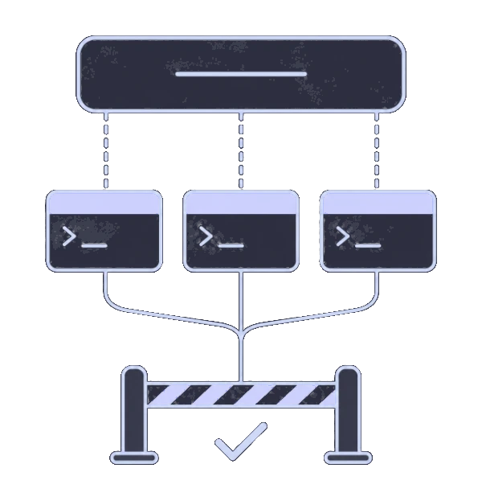
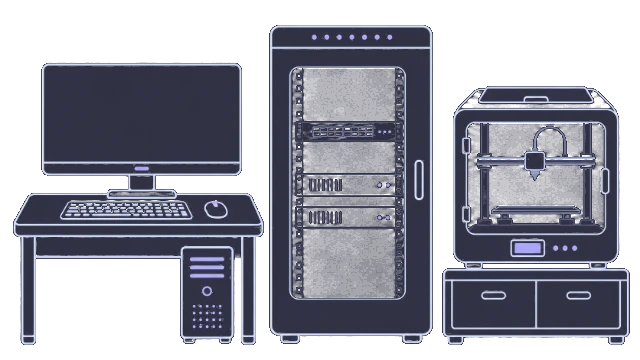
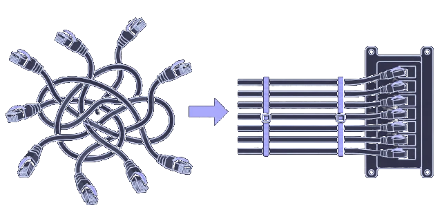
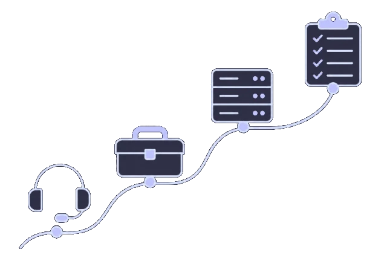
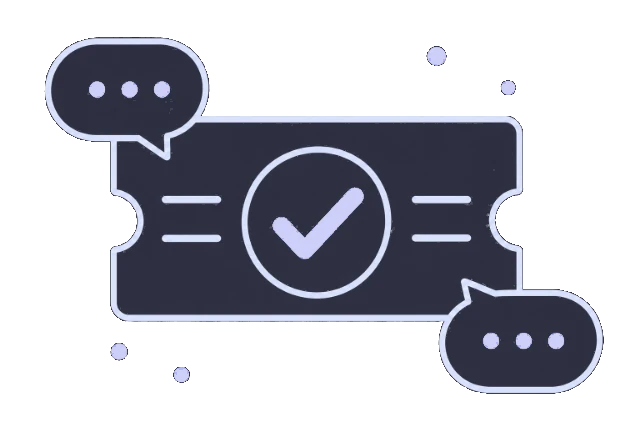
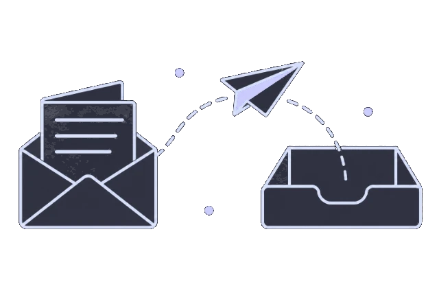

Logan Grass I run IT projects start to finish. I still do the hands-on work.
I’m a project manager at an MSP in Pasadena. I take client projects from the signed quote to closeout. At home I put a small team of AI agents to real work, and what works there, I bring to my day job.
- Role
- Project Manager AllSafe IT, Pasadena, since Nov 2026
- Certs
- CompTIA A+, Network+ Security+ in progress
logan@la:~ tty1
logan@la:~$ ask coordinator "ready to merge?"
coordinator checks passed at the exact commit. Independent review done.
coordinator Waiting for your approval.
logan@la:~$ approve
coordinator Merged. Reading the deploy back off the host.
A scripted example. No model is running on this page.
Type help for commands. Runs locally only.
geo los-angeles, ca
I put AI to work, and I check the results.
A coordinator hands each task to its own agent, and they share a memory that carries over between sessions. It all runs on my own hardware at home, and some models run on my own GPU. What I build here comes to work with me.
- Real work, not demos. Agents open pull requests like anyone else. A change merges only at the exact commit that passed checks and an independent review.
- Less noise, more answers. An alert wakes an agent, and it checks the live state before it tells me anything.
- I read the result back. After a merge I check the deploy and the installed version myself. A passing pipeline alone doesn’t count.
- I stay the approval step. Anything that would restart the server waits for me.

My home lab. I run it like it’s production.
A 12U rack at home, right next to my desk. Everything I build here comes to work with me, and it has made me more productive and more on top of things.
- Nothing changes by hand. Every change has a record and a way back.
- Updates arrive daily. Each container gets a snapshot first.
- Monitoring tells me which layer broke. I’m not guessing.
What I’d built by November 2026. Not a live status page.
Technical detail →
Problems I’ve made smaller.
Client work from MSP and onsite jobs, separate from the lab.
-
95% fewer configuration errors
Router setups
Every site’s router came out a little different. I wrote reusable setup scripts with backups and rollback built in.
-
Hours down to minutes per machine
Windows workstation builds
Network-boot imaging with the standard software built in, so every machine left the bench the same and checked.
-
25+ people working on day one
A new office
Network, Wi-Fi, cabling, rack and phones were ready before anyone moved in, and nothing went down after opening.

The escalation path turned into a career.
Five years from Tier 1 tickets to running the projects.
Download the resume (PDF)
-
Project Manager AllSafe IT, Pasadena
I run client projects from the signed quote to closeout, and I’m the client’s one point of contact.
-
MSP Help Desk Engineer, Tier II AllSafe IT
Remote and onsite support for MSP clients around Los Angeles. I owned incidents end to end and wrote them up properly.
-
Service Delivery Specialist ApexIT Consulting, onsite in Santa Ana
Embedded at an aerospace manufacturer, tracking problems down across workstations, network, licensing and servers.
-
Field Specialist II 911 IT
The main escalation point for server, network and infrastructure problems across MSP clients.
-
Help Desk Manager 911 IT
I ran SLA compliance, queue health and escalation handoffs, and coached techs on triage and talking to clients.
-
Help Desk Technician 911 IT
Tier 1–2 support for Windows, Microsoft 365, printers, networking and business apps.
What people said after the ticket closed.
Real responses from my time at 911 IT. First names only.
Logan is friendly, efficient, knowledgeable, patient, and persistent. He got it fixed the same day.
Awesome job setting up our office in St. George. Everything exactly as we wanted.
He came up with a solution that should be a permanent fix.

Got a project? Tell me about it.
I’m in Los Angeles, and I reply by email.
Prefer to read first? resume.pdf, GitHub, certifications.
